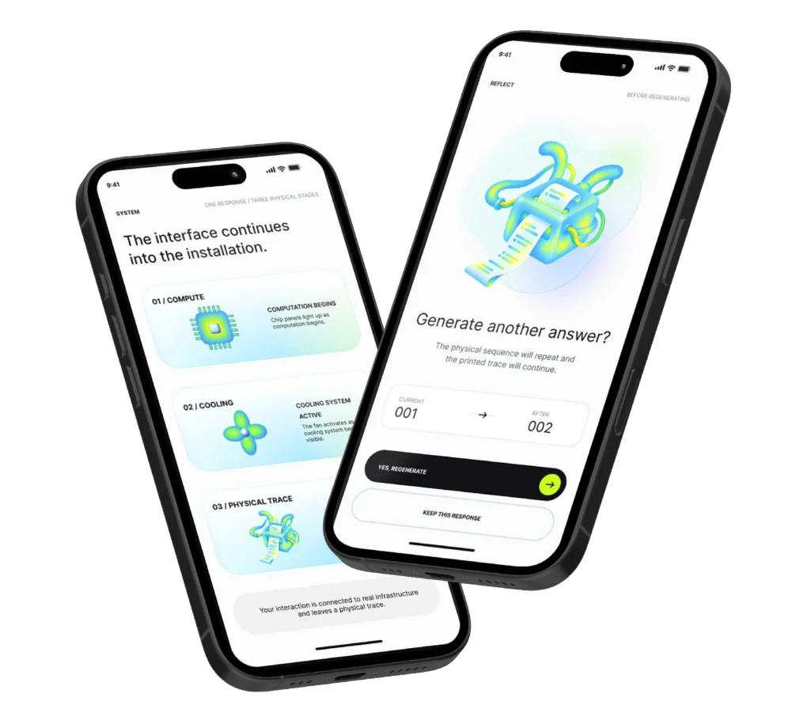
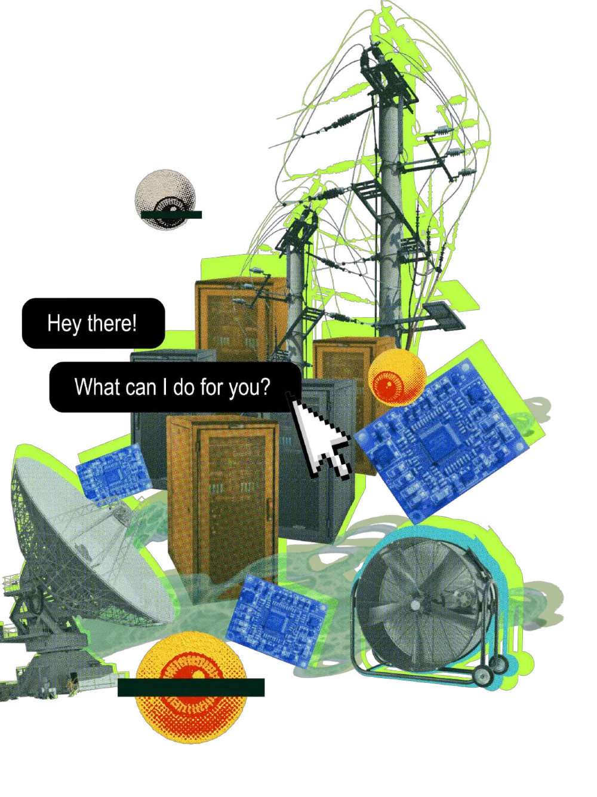
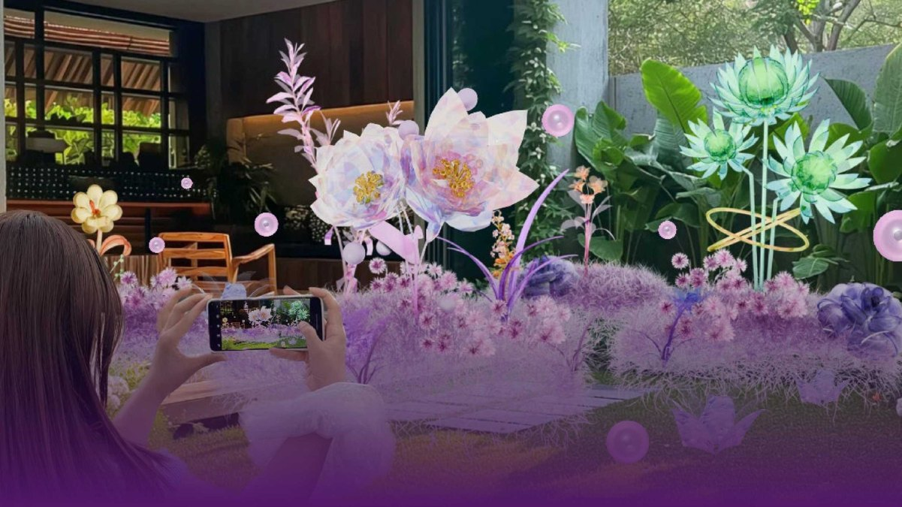
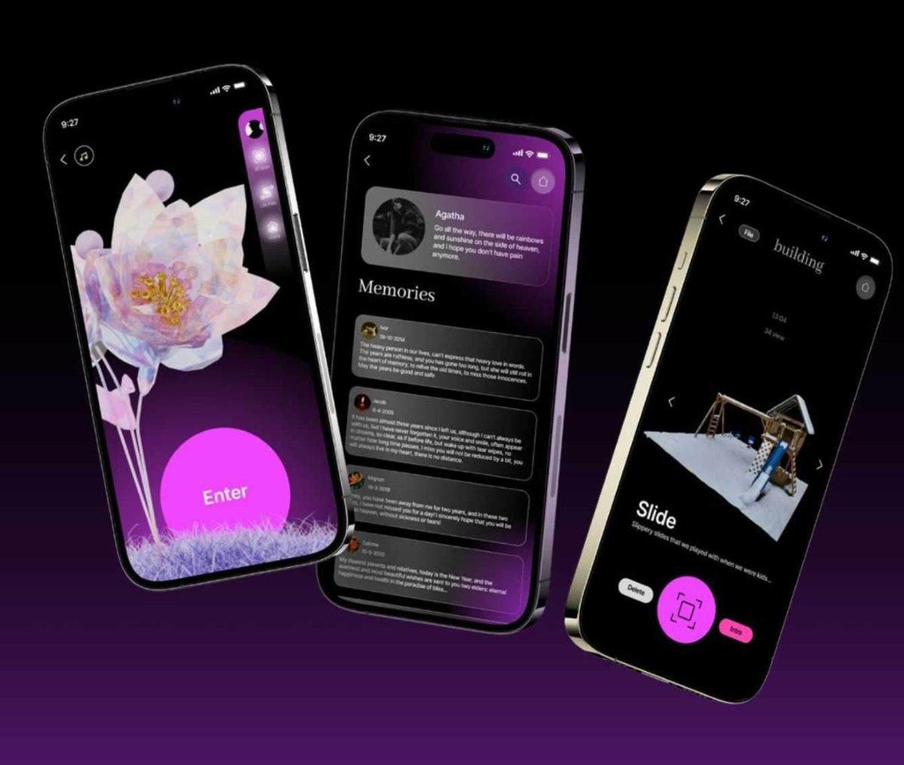
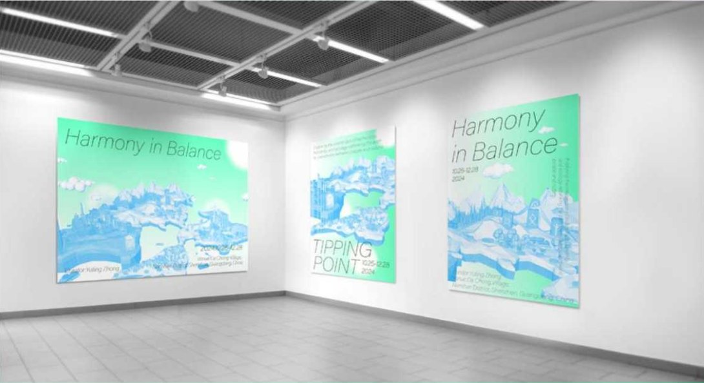
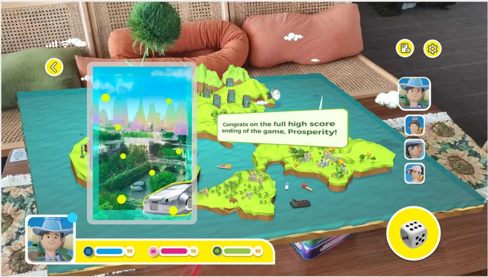
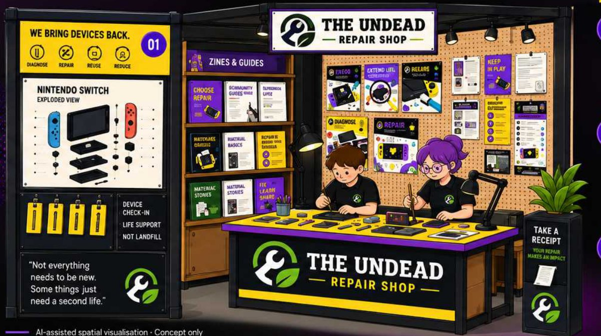
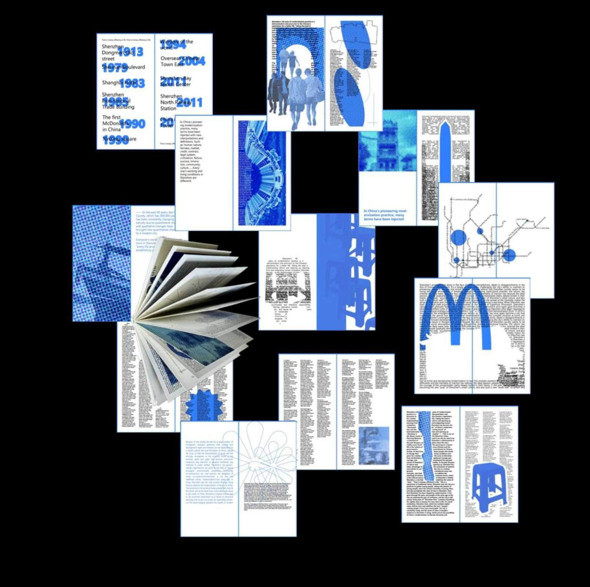

YUTINGZHONG(YZ)
A LOOK!
WORK
in play.
Five projects.
Different questions.
Always a little curiosity.


Beyond the Interface
Making the hidden physical systems behind everyday generative AI visible.


Memorial Grove
A virtual garden for memory, remembrance and connection.


Tipping Point
Exploring the balance between urban growth and ecological care.

The Undead Repair Shop
Turning repair knowledge into an accessible publishing experience.

Connected
A book exploring belonging and urban identity in Shenzhen.
A BIT
ABOUT
ME
HUMAN–NON-HUMANCARE CLUB
Curiosity first.
Design follows.
I am a Communication Design postgraduate student at the University of Southampton, focusing on visual and interaction-based practices.
My work brings together design, technology, and critical thinking. I'm drawn to humanistic and animal-centered perspectives, and to the possibilities that open up when different fields meet.
LET'S TALK IDEAS